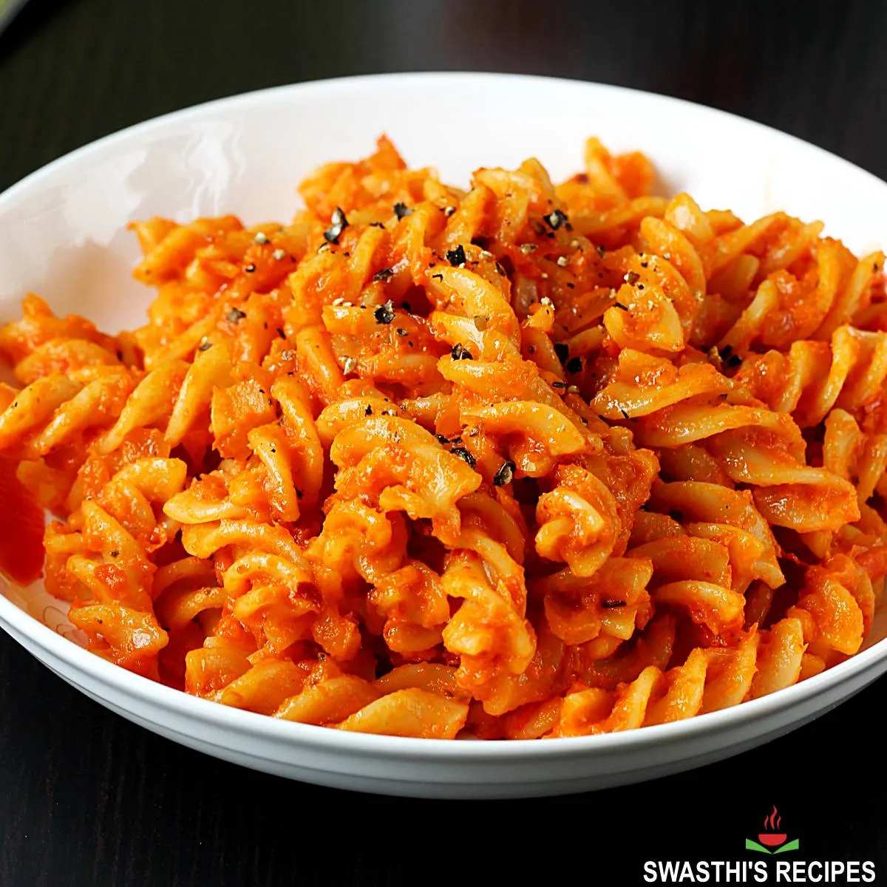

Home
Tomato Pasta

A simple pasta dish with a classic tomato-garlic sauce.
Ingredients
- 1 cup pasta (any kind)
- 1/2 cup canned tomato sauce
- 1 clove garlic, minced
- 1 tablespoon olive oil
- Salt to taste
- Grated cheese (optional)
Steps
- Boil pasta according to package instructions.
- In a pan, heat olive oil and sauté garlic until golden brown and fragrant.
- Add tomato sauce and cook on medium heat for 5 minutes.
- Drain pasta and add it to the sauce.
- Mix the pasta well with the sauce.
- Top with cheese if desired.
- Serve warm.